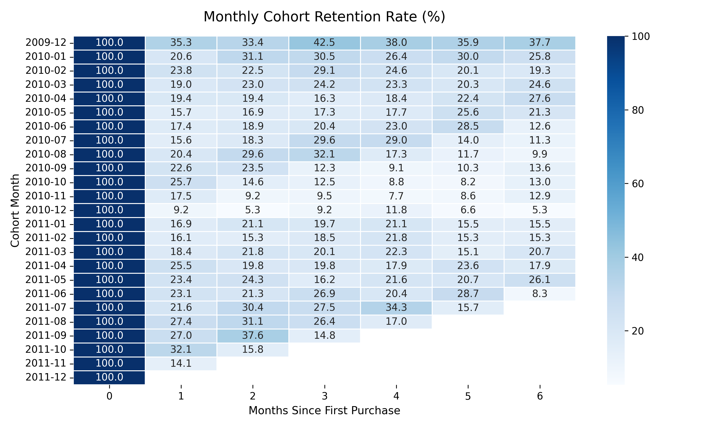

Advanced SQL & Customer Analytics
Customer Cohort Retention & RFM Segmentation Engine
35.3% Month 1 Retention
4 RFM Quartiles
DuckDB Multi-CTEs

Engineered multi-level Common Table Expressions (CTEs) and window functions to compute multi-month customer retention decay and segment buyers into distinct behavioral cohorts.
- Retention Trajectory: Quantified user drop-off across monthly cohorts, finding stabilization around months 3–5.
- RFM Segmentation: Classified customer base using
NTILE(4)scoring across Recency, Frequency, and Monetary value. - Stack: SQL (DuckDB/PostgreSQL), Window Functions, Pandas, Seaborn.